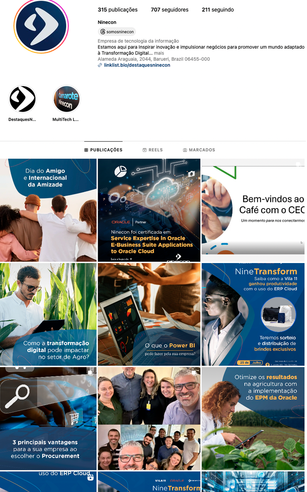
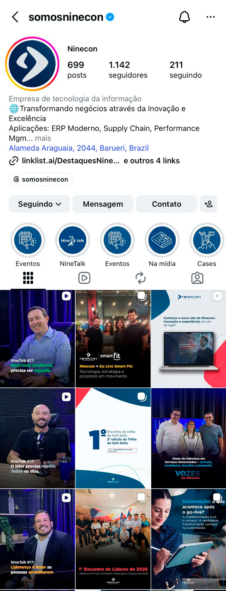

Objetivo Modernizar a presença digital da Ninecon, mostrando mais as pessoas reais por trás da empresa e criando uma identidade visual consistente em todos os canais.
Processo Assumi as redes em outubro de 2024 e comecei o processo de transição visual em março de 2025. Em junho o feed já tinha uma cara completamente diferente: mais cores, mais pessoas reais, linguagem mais próxima e um posicionamento visual mais estratégico. Cuidei de planejamento, criação de conteúdo, identidade visual e monitoramento de desempenho no Instagram, YouTube e LinkedIn.
Resultado Crescimento de aproximadamente 60% no Instagram da empresa, acompanhado de uma reformulação completa da presença digital da marca. A comunicação passou a transmitir mais proximidade, autoridade e consistência visual, fortalecendo o posicionamento da Ninecon nas redes sociais. Também houve crescimento de +XXX% no LinkedIn e expansão da presença institucional nos canais digitais.
Evolução visual do Instagram


{kind=link}
{kind=link}